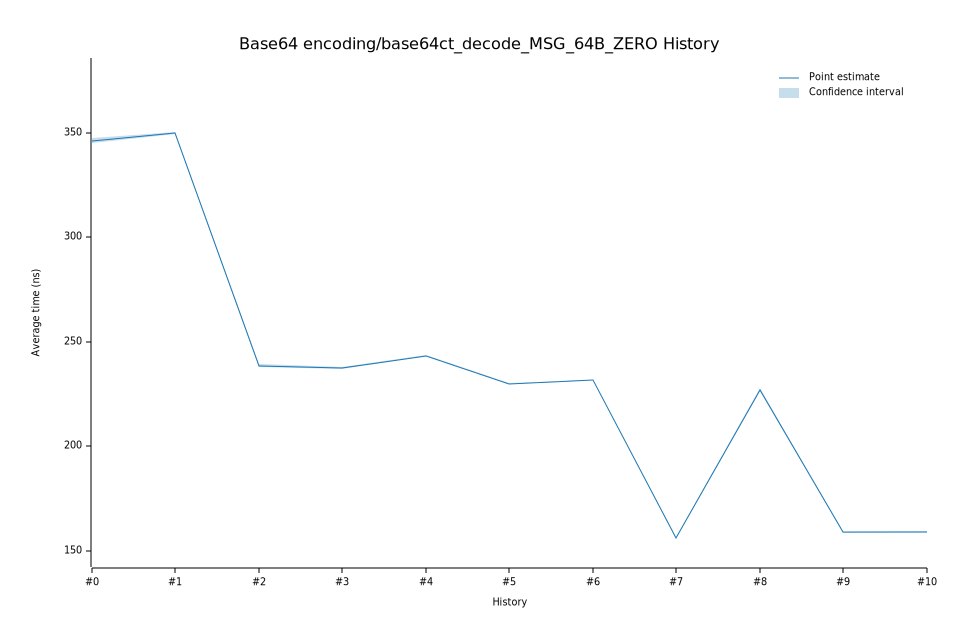

# 52023-02-13T21:12:08Z
|
Lower Bound |
Estimate |
Upper Bound |
| Value: |
229.67ns |
229.95ns |
230.22ns |
| Change in Value: |
-5.8230% |
-5.6477% |
-5.4637% |
No change in performance detected.
# 42023-02-09T13:18:16Z
|
Lower Bound |
Estimate |
Upper Bound |
| Value: |
243.09ns |
243.41ns |
243.72ns |
| Change in Value: |
+1.9866% |
+2.2341% |
+2.4796% |
No change in performance detected.
# 32023-02-08T19:26:09Z
|
Lower Bound |
Estimate |
Upper Bound |
| Value: |
237.16ns |
237.50ns |
237.89ns |
| Change in Value: |
-0.0461% |
+0.3217% |
+0.6936% |
Change within noise threshold.
# 22022-12-05T09:13:43Z
|
Lower Bound |
Estimate |
Upper Bound |
| Value: |
238.04ns |
238.66ns |
239.26ns |
| Change in Value: |
-32.210% |
-31.972% |
-31.731% |
No change in performance detected.
# 12022-11-14T12:29:10Z
|
Lower Bound |
Estimate |
Upper Bound |
| Value: |
349.67ns |
350.19ns |
350.66ns |
| Change in Value: |
+0.2081% |
+0.5218% |
+0.8166% |
No change in performance detected.
# 02022-11-04T14:05:44Z
|
Lower Bound |
Estimate |
Upper Bound |
| Value: |
345.35ns |
346.39ns |
347.43ns |